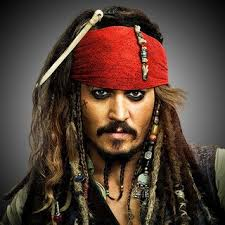
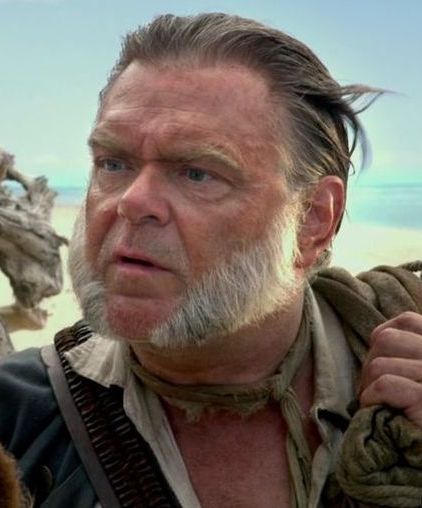
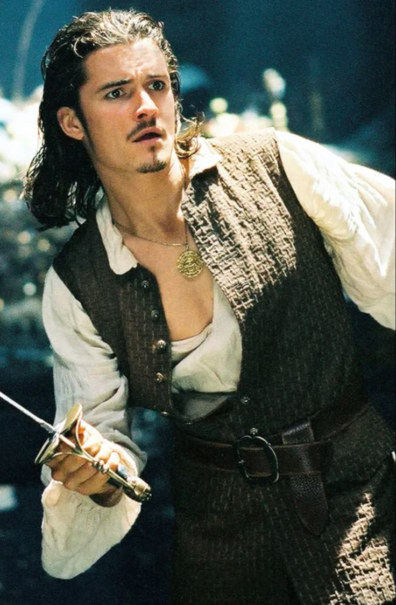
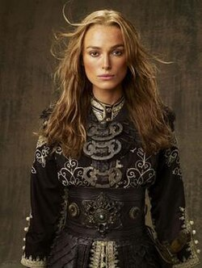
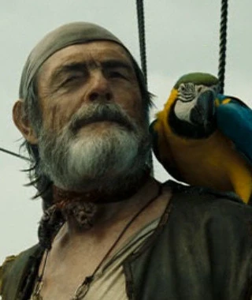
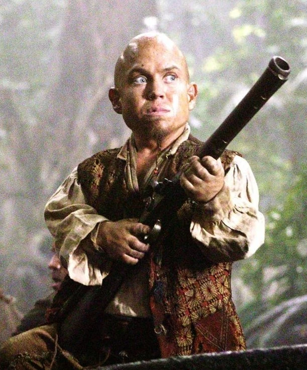
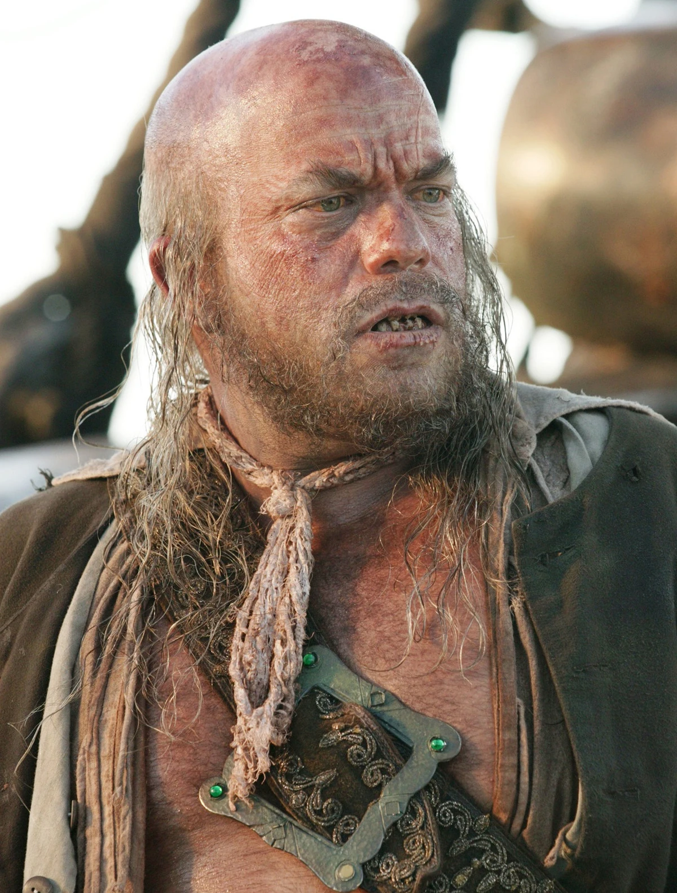
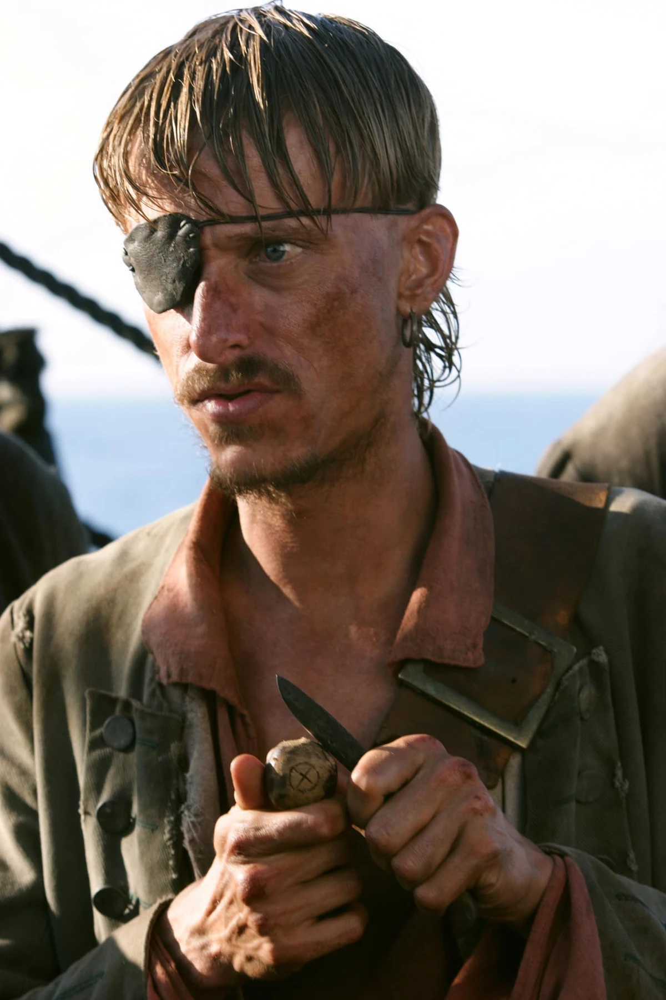

De Crew
De crew van de Black Pearl bestaat uit loyale en kleurrijke piraten, elk met hun eigen verhaal. Samen trotseren ze de zeeën en beleven ze de wildste avonturen onder leiding van Jack Sparrow.
Maak kennis met de bemanning van Jack Sparrow en de Black Pearl.
De crew van de Black Pearl bestaat uit loyale en kleurrijke piraten, elk met hun eigen verhaal. Samen trotseren ze de zeeën en beleven ze de wildste avonturen onder leiding van Jack Sparrow.

De kapitein van de Black Pearl, de meest gekende piraat aller tijden. Jack is altijd opzoek naar avontuur.

Jack's trouwe eerste stuurman, bijgelovig en een echte vriend op zee.

Bekwaam zwaardvechter, loyaal aan zijn vrienden en later kapitein van de Vliegende Hollander.

Moedig, slim en een geboren leider. Ze vaart mee als piraat en koningin van de zee.

De stille matroos die communiceert via zijn papegaai. Altijd trouw aan de crew.

Kleine, dappere piraat met een groot hart. Vaak te vinden met een pistool in de hand.

Komische noot aan boord, vaak samen met Ragetti. Niet de slimste, wel loyaal.

Bekend om zijn houten oog en zijn vriendschap met Pintel. Zorgt voor veel humor aan boord.